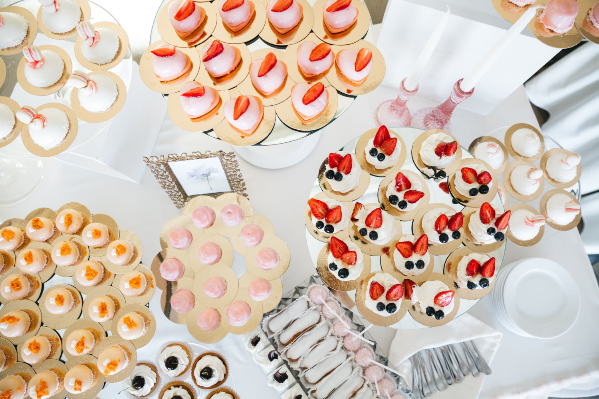

Welcome to Toronto Cupcake, your go-to destination for the most delicious and freshly baked cupcakes in Toronto. Whether you're celebrating a birthday, hosting a corporate event, or just craving a sweet treat, we've got the perfect cupcakes for every occasion. Order online 24/7 and enjoy fast, reliable delivery! Delicious cupcakes made fresh for every occasion. We cater to corporate events, birthdays, weddings, and more. Browse through our selection of custom cupcakes or create your own!
Order Cupcakes Online Today!
Ready to indulge in Toronto's best cupcakes? Order online today and have fresh, delicious cupcakes delivered right to your door. Whether you need cupcakes for a party or just want to treat yourself, Toronto Cupcake has you covered!